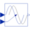

VariableDelayDelay block with variable DelayTime |

|
Information
This information is part of the Modelica Standard Library maintained by the Modelica Association.
The Input signal is delayed by a given time instant, or more precisely:
y = u(time - delayTime) for time > time.start + delayTime
= u(time.start) for time ≤ time.start + delayTime
where delayTime is an additional input signal which must follow the following relationship:
0 ≤ delayTime ≤ delayMax
Parameters (1)
| delayMax |
Value: Type: Duration (s) Description: Maximum delay time |
|---|
Connectors (3)
| u |
Type: RealInput Description: Connector of Real input signal |
|
|---|---|---|
| y |
Type: RealOutput Description: Connector of Real output signal |
|
| delayTime |
Type: RealInput |